A photomechanical print is a mechanical reproduction of a photo image that is printed in ink, often by a printer's press. Photomechanical prints are not the product of a photographic process; their supports are not light-sensitive, and light plays no direct role in image production. Instead, the image has been impressed or transferred mechanically from a inked plate or other surface, which has been created using a photographic negative as its image source. Unlike photographic prints, photomechanical prints generally do not display signs of image fading. With the exception of the woodburytype, they can be identified by distinctive patterns under magnification.
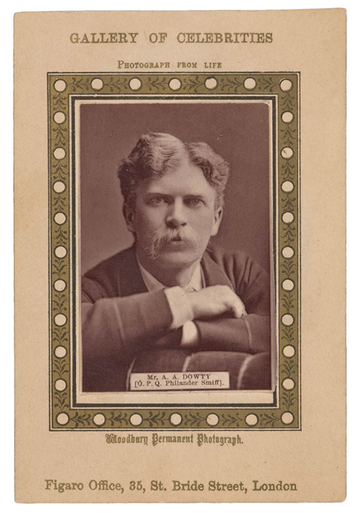
Woodburytype. Image courtesy of Image Permanence Institute, Graphics Atlas
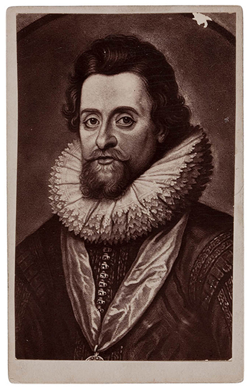
Woodburytype. Image courtesy of Image Permanence Institute, Graphics Atlas
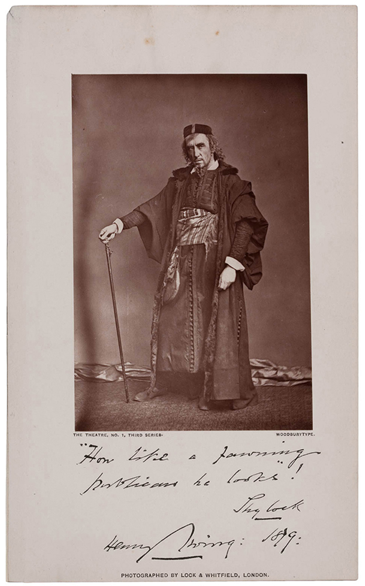
Woodburytype. Image courtesy of Image Permanence Institute, Graphics Atlas
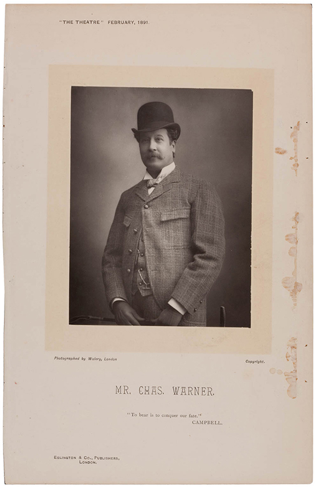
Woodburytype. Image courtesy of Image Permanence Institute, Graphics Atlas
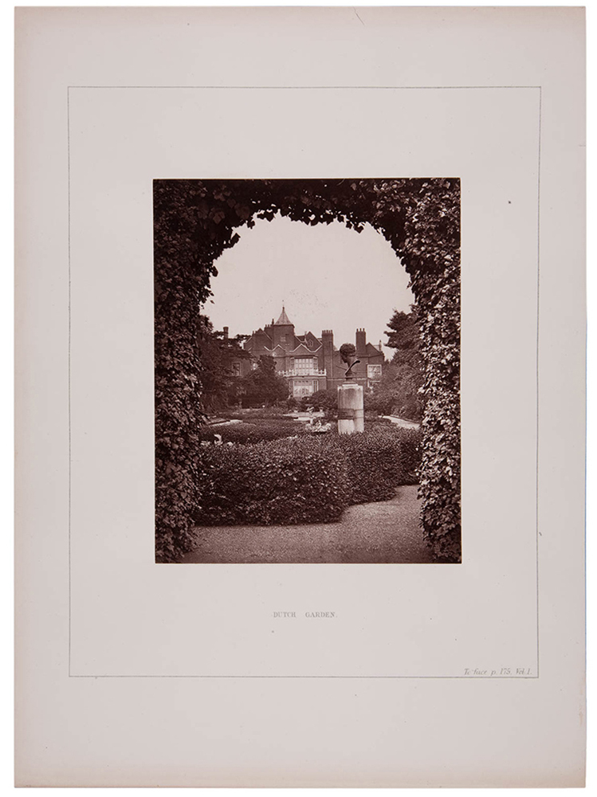
Woodburytype. Image courtesy of Image Permanence Institute, Graphics Atlas
No discernible pattern; capable of reproducing fine detail
Paper Fibers
Partially visible in highlights
Image Color
Monochrome; typically purplish-brown, brown or black, but can be any variety
Description
A woodburytype print is comprised of a coated paper support with gelatin binder and carbon pigment image. Woodburytypes resemble carbon prints but differ in that they are produced through a photomechanical--rather than photographic--process. Woodburytypes were made on a special printing press using pigmented gelatin as the "ink". Unlike other photomechanical processes, they have no discernible grain pattern and are capable of reproducing the continuous tone of a photographic image. Although they appear very similar to carbon prints, woodburytypes exhibit slightly more of an image relief effect in shadow areas, which are glossier and more elevated than in highlights (differential gloss). Paper fibers can be seen under magnification in highlight areas. Woodburytypes are also usually smaller than carbon prints and are never larger than 11" × 14".
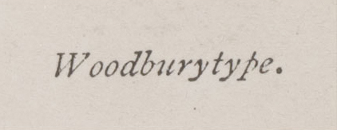
Woodburytype label.
Woodburytypes were often used as book illustration. Pages will typically be labeled "Woodburytype" or have marginal print or border lines. If loose, they are usually trimmed and mounted on a secondary support, such as a cabinet card (6¼" × 4¼"), carte-de-visite (2½" × 4¼"), stereocard (about 3½" × 7"), or glass. Under magnification, the sheared edges will show slight deformities of paper fiber and pigmented gelatin.
Differential gloss on Woodburytype surface. Video courtesy of Image Permanence Institute, Graphics Atlas
Composition
Support
Binder
Image
Paper (coated, 2-layer)
Gelatin
Carbon pigment particles
Deterioration
Woodburytype prints display little or no fading or yellowing. Darker areas of the image may develop large cracks where the gelatin layer is thickest. These cracks will often be visible to the naked eye. Image edges or corners may exhibit cracking or lifting of the gelatin layer. As with all prints on paper, they are susceptible to mechanical damage and staining. When found unmounted, woodburytypes will have a tendency to curl in on themselves.
Risk Level
Low. The preservation risk of a woodburytype largely depends on the type of paper on which it was printed.
Common Size(s)
Variable; Never larger than 11" × 14", and usually smaller than 7" × 9.5". Prints are often trimmed and mounted on a secondary support.
Background
The Woodburytype process was patented by Walter Bentley Woodbury and Joseph Wilson Swan in 1864 and published the following year. Woodburytype prints were produced from around 1865 to the early 1910s. Unlike other photomechanical ink-on-paper processes, woodburytypes could reproduce delicate continuous tone. In this way, they can be virtually indistinguishable from true photographs of the period (i.e. carbon prints). Woodburytype prints were typically produced for high-end book illustrations, magazines, and promotional materials or sold as individual, cardmount prints. Although the woodburytype was the most refined and faithful of nineteenth century photomechanical processes, it was gradually replaced by the more versatile collotype process in the late nineteenth century.
Acid-free enclosures and/or folders strongly advised. This enclosure may be a paper (conservation-quality, acid-free) or plastic (uncoated polyester, polyethylene, polypropylene, cellulose triacetate) sleeve, envelope, or wrapper. Position image material away from seams in paper enclosures. Such seams should be on the sides of the enclosure, not down its center. Enclosures should be stored in hanging file folders or archival storage boxes. All storage materials should pass the Photographic Activity Test (PAT) as specified in ISO Standard 18916:2007.
Storage Orientation
Vertically in file folders, placed vertically inside acid-free storage boxes or steel filing cabinets. Wood cabinets should be avoided. Enameled steel, stainless steel, or anodized aluminum are preferred.
Display Recommendations
The duration of an exhibit should be determined in advance, and no item should be placed on display permanently. Most items should not be displayed for longer than 3-4 months, assuming other conditions such as light levels, temperature, and relative humidity are within acceptable ranges. Facsimiles or items of low artifactual value may be exhibited for longer periods of time. Between display periods, it should be returned to an appropriate environment where it may "rest" in dark storage.
Light levels should be kept as low as possible. When on display, objects should be protected from exposure to natural light, which contains high levels of UV radiation. Shades, curtains, or filters applied directly to windows will help to minimize this exposure. Display cases should be enclosed and sealed to protect their contents, and their items should be securely framed or matted using preservation-quality materials that have passed the Photographic Activity Test (ISO18916).
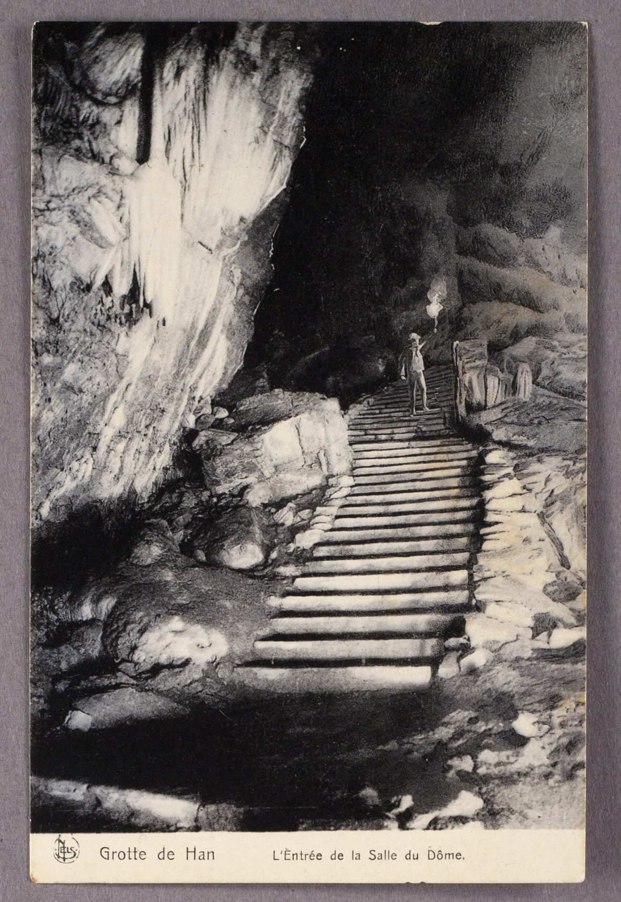
Collotype.
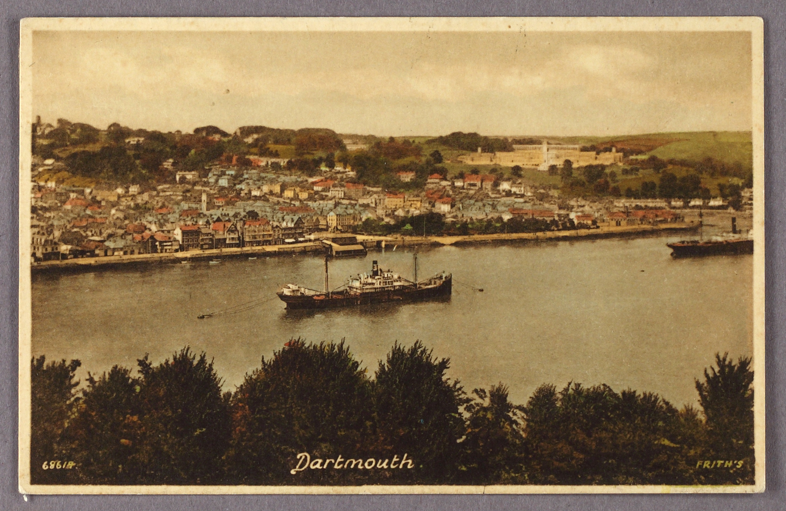
Color collotype.
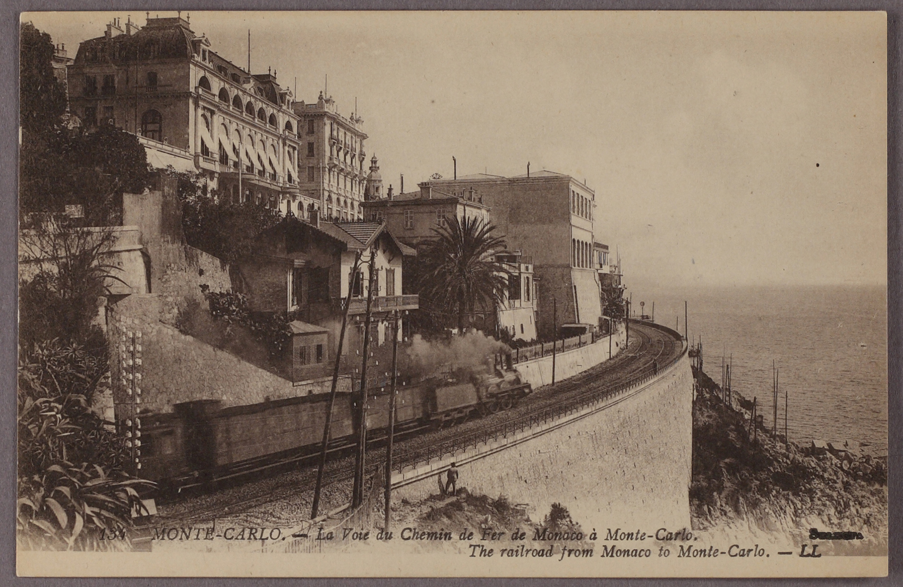
Collotype.
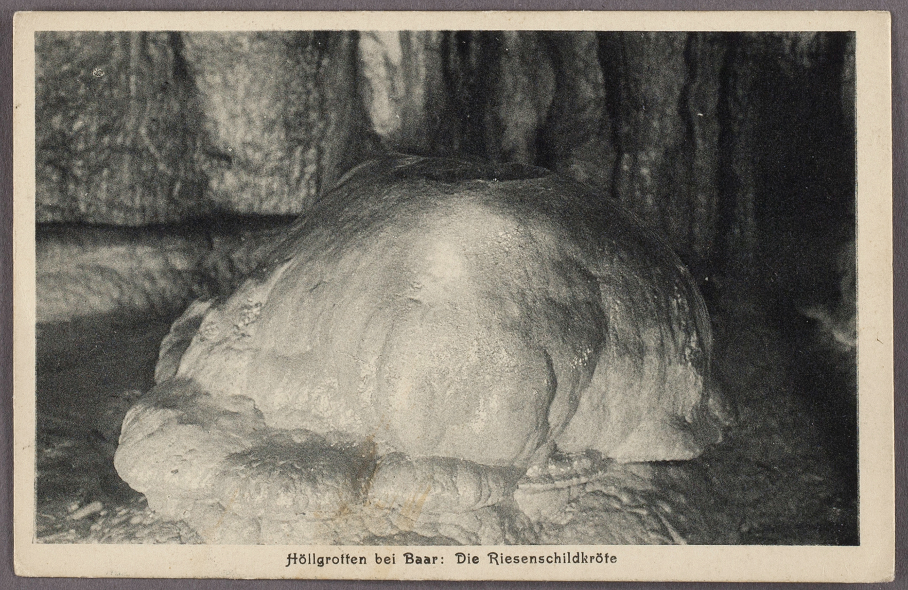
Collotype.
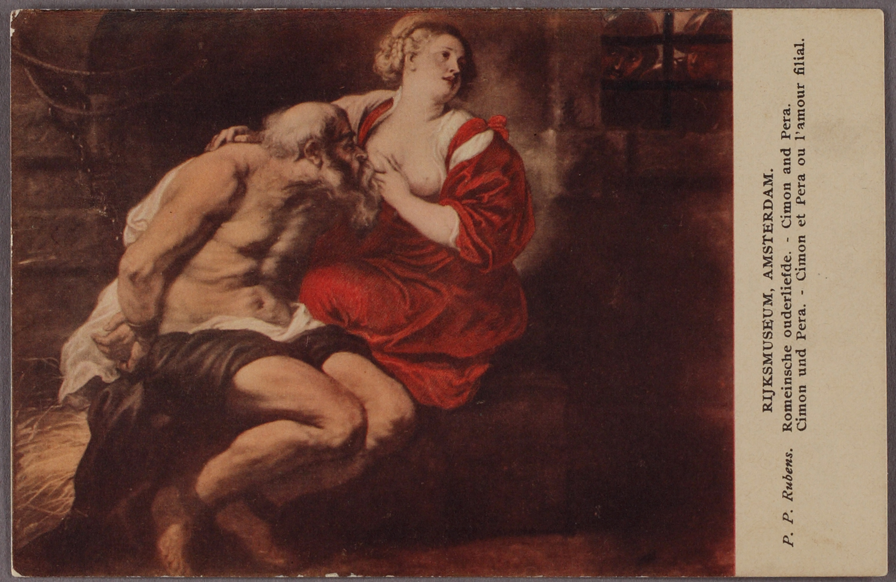
Color collotype.
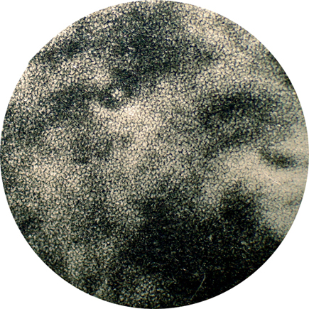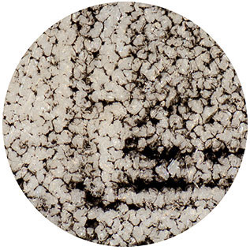
Collotype reticulation pattern (under magnification). Image courtesy of Image Permanence Institute, Graphics Atlas
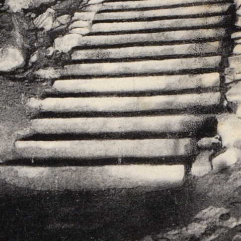
Collotype detail.
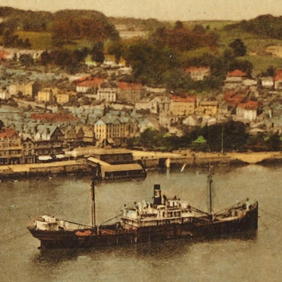
Color collotype detail.
Synonyms
Albertype
Talbotype
Collograph
Heliotype
Photo-collograph
Phototype
Lichtdruck
Phototypie
Dates
c. 1868 – present
Image Pattern
Fine "worm-like" reticulation pattern (under magnification)
Paper Fibers
Partially visible
Image Color
Monochrome (most common) or color
Description
A collotype is comprised of an ink image on paper support (sometimes with a baryta layer). The image is produced on a printing press from a glass plate with a layer of light-sensitive dichromated gelatin. A negative is exposed on the plate, and areas of the gelatin layer that received more light are "tanned" and harden, allowing them to hold more ink than untanned areas. While monochrome image tone depends on the choice of ink, polychrome values can be achieved through hand-coloring, stencils, or multiple-pass printing of separate color plates.
Under magnification, a brain- or worm-like reticulation pattern can be seen. Surface finishes vary from matte to glossy, but they are typically matte (unvarnished). Collotypes exhibit no image fading and have glossier ink than photogravures in the shadows. Collotypes often appear as book illustrations, movie lobby cards, postcards, and topographical views. A collotype postcard will likely have "Albertype" printed on the verso. Since text and images can not be printed at the same time using the collotype process, it was often combined with other printing processes like letterpress for the application of text.
Composition
Support
Image
Paper (with optional baryta layer)
Ink (oil-based)
Deterioration
The support paper may be sensitive to extended display under intense light. The image will not fade, but the support paper can sustain mechanical damage, such as tearing. Collotypes are relatively stable otherwise, depending on the quality of paper used for printing.
Risk Level
Low. The preservation risk of a collotype largely depends on the type of paper on which it was printed.
Common Size(s)
Varied; Due to its broad application, prints may be found in a multitude of sizes, although postcards and large-format prints are most common.
Background
The collotype process was invented by Alphonse-Louis Poitevin in 1855 and first applied by F. Joubert in 1859. Following 1868, Joseph Albert and Jakub Husnik's improvements on the format enabled collotype illustrations to be printed in much larger runs. Collotypes were in wide circulation from the 1870s to the 1940s, although they are still produced today. Collotypes briefly unseated woodburytypes in the late nineteenth century but subsequently receded after the early 1900s due to competition with the less expensive process of off-set printing.
Although technically difficult and expensive, the process resulted in highly detailed reproductions of photographic images. It was popular among publishers that wanted to mimic the appearance of silver gelatin photographs in book illustrations, movie lobby cards, and postcards. Ink colors, paper, and varnishes were often chosen to imitate photographic prints. In all prints produced after the 1870s, the distinctive worm-like pattern will be observable under magnification. This reticulation pattern is a result of the glass plate being heated in an oven to accelerate drying the gelatin layer.
Acid-free enclosures and/or folders strongly advised. This enclosure may be a paper (conservation-quality, acid-free) or plastic (uncoated polyester, polyethylene, polypropylene, cellulose triacetate) sleeve, envelope, or wrapper. Position image material away from seams in paper enclosures. Such seams should be on the sides of the enclosure, not down its center. Enclosures should be stored in hanging file folders or archival storage boxes. All storage materials should pass the Photographic Activity Test (PAT) as specified in ISO Standard 18916:2007.
Storage Orientation
Vertically in file folders, placed vertically inside acid-free storage boxes or steel filing cabinets. Wood cabinets should be avoided. Enameled steel, stainless steel, or anodized aluminum are preferred.
Display Recommendations
The duration of an exhibit should be determined in advance, and no item should be placed on display permanently. Most items should not be displayed for longer than 3-4 months, assuming other conditions such as light levels, temperature, and relative humidity are within acceptable ranges. Facsimiles or items of low artifactual value may be exhibited for longer periods of time. Between display periods, it should be returned to an appropriate environment where it may "rest" in dark storage.
Light levels should be kept as low as possible. When on display, objects should be protected from exposure to natural light, which contains high levels of UV radiation. Shades, curtains, or filters applied directly to windows will help to minimize this exposure. Display cases should be enclosed and sealed to protect their contents, and their items should be securely framed or matted using preservation-quality materials that have passed the Photographic Activity Test (ISO18916).
Fine, speckled aquatint grain (photogravure) or soft-edged screen (rotogravure)
Paper Fibers
Partially visible in highlights (monochrome)
Image Color
Monochrome (most common) or color
Description
A gravure is comprised of an ink image on paper support. Images will bear a high level of detail, and highlights will be unmuddled. Under magnification, paper fibers will be visible in the highlights. Ink will appear to rest on the matte surface of the paper. It can be identified by either one of two distinctive ink patterns when viewed under magnification. Photogravures have a fine, irregular speckled pattern (aquatint grain); rotogravures have a regular screen pattern (equally-sized square cells) instead.
Gravures were used for fine art reproductions and for book, newspaper, and magazine illustrations. Gravure images may be any color, but those from the early twentieth century will likely be brown, dark green, or black. Due to pressure from the printing plate, an embossed plate mark may be present around the edges of a photogravure image, but it could have been trimmed off. Rotogravures can also have an embossed plate mark, but these were sometimes added to imitate the quality of limited edition photogravures: a clean, uninked edge mark can be a clue of such embellishment.
Photogravure vs. Rotogravure
The terms Photogravure and Rotogravure are often used interchangeably, but each is a separate printing process. Compositionally, they are identical: the method of ink application is all that differentiates them. Photogravures are limited-run prints, which are hand-pulled on a plate and flatbed press (photogravure process). Photogravures are identified by their aquatint grain pattern. Rotogravures are high-volume prints that are traditionally produced with a cylinder and screen. Rotogravures are identified by their soft-edged screen pattern. Modern variations of the rotogravure process continue to be used in commercial publication.
Composition
Support
Image
Paper
Ink (oil-based)
Deterioration
Gravures do not usually fade but are susceptible to mechanical damage to the support, such as tearing. They may exhibit other common forms of paper deterioration, including discoloration, embrittlement, and staining. Foxing is a common form of localized paper staining that is fairly common for early photogravures, depending on the quality of support paper.
Risk Level
Low. The preservation risk of a gravure largely depends on the type of paper on which it was printed. Foxing and most paper staining will be spurred along by high humidity levels in the environment.
Common Size(s)
Varied; Due to its broad application, prints may be found in a multitude of sizes.
Background
Gravures were produced from the 1870s and continue to be produced to the present day in fine art photography and commercial printing communities. Limited-run prints were produced on a plate and flatbed press (photogravure process), while high-volume printing was generally executed with a copper cylinder and screen (rotogravure process). From the early 1910s through the 1950s, the rotogravure process was used to produce large runs of high-quality B&W and color images, most often for special newspaper and magazine pictorial sections featuring celebrities and athletes. Photography-based print material like full-color weekend newspaper inserts and magazines like National Geographic are printed using a contemporary version of the rotogravure process.
Acid-free enclosures and/or folders strongly advised. This enclosure may be a paper (conservation-quality, acid-free) or plastic (uncoated polyester, polyethylene, polypropylene, cellulose triacetate) sleeve, envelope, or wrapper. Position image material away from seams in paper enclosures. Such seams should be on the sides of the enclosure, not down its center. Enclosures should be stored in hanging file folders or archival storage boxes. All storage materials should pass the Photographic Activity Test (PAT) as specified in ISO Standard 18916:2007.
Storage Orientation
Vertically in file folders, placed vertically inside acid-free storage boxes or steel filing cabinets. Wood cabinets should be avoided. Enameled steel, stainless steel, or anodized aluminum are preferred.
Display Recommendations
The duration of an exhibit should be determined in advance, and no item should be placed on display permanently. Most items should not be displayed for longer than 3 to 4 months, assuming other conditions such as light levels, temperature, and relative humidity are within acceptable ranges. Facsimiles or items of low artifactual value may be exhibited for longer periods of time. Between display periods, it should be returned to an appropriate environment where it may "rest" in dark storage.
Light levels should be kept as low as possible. When on display, objects should be protected from exposure to natural light, which contains high levels of UV radiation. Shades, curtains, or filters applied directly to windows will help to minimize this exposure. Display cases should be enclosed and sealed to protect their contents, and their items should be securely framed or matted using preservation-quality materials that have passed the Photographic Activity Test (ISO18916).
Monochrome or color (duotone, 3-color, or 4-color)
Description
A letterpress halftone is comprised of ink on a paper support. The image may be monochrome or multi-colored (e.g. two, three, and four-color halftones). This process can be identified under magnification by a sharp-edged large dot or waffle pattern that is most evident in middle-tone areas; older images with coarser dots (and thus lower resolution) may be identifiable by the naked eye. If polychrome, the image pattern will seem mosaic-like.
Ink will appear to lay on the paper surface. Letterpress halftone prints are printed from a metal relief plate, which creates sharply defined edges around typographic matter and the dots that create the image. These sharp edges are the result of ink being squeezed away from the plate as pressure is applied during the printing process. Letterpress halftone images are characterized by poor reproduction of detail compared to other photomechanical processes. Halftone prints do not fade and may be printed on any paper with any color ink.
Composition
Support
Image
Paper
Ink (oil-based or synthetic)
Deterioration
Deterioration of the print is largely dependant on the quality of paper support used, since the ink used to produce letterpress halftones generally does not fade and is water-insoluble. The print may yellow or become deformed if exposed to very high and low humidity in the environment. As with other prints on paper, mechanical damage may occur as a result of neglectful handling or poor storage.
Risk Level
Low. The preservation risk of a letterpress print largely depends on the type of paper on which it was printed.
Common Size(s)
Varied; may be any size but were typically large-format in commercial applications
Background
Letterpress halftone is a process that emerged in the 1880s that continues to be produced in the present day. It was most commonly applied as a commercial printing process during the early to mid-twentieth century. Halftone printing was often used for postcards, newspapers, magazines, calendars, and other large-scale commercial printing. Some objects may contain a combination of letterpress halftone with other printing processes like chromolithography to create a colored image. By the early 1960s, the commercial printing industry had begun to turn away from letterpress halftone printing in favor of the faster, cheaper, and more colorful offset lithography process.
Acid-free enclosures and/or folders strongly advised. This enclosure may be a paper (conservation-quality, acid-free) or plastic (uncoated polyester, polyethylene, polypropylene, cellulose triacetate) sleeve, envelope, or wrapper. Position image material away from seams in paper enclosures. Such seams should be on the sides of the enclosure, not down its center. Enclosures should be stored in hanging file folders or archival storage boxes. All storage materials should pass the Photographic Activity Test (PAT) as specified in ISO Standard 18916:2007.
Storage Orientation
Vertically in file folders, placed vertically inside acid-free storage boxes or steel filing cabinets. Wood cabinets should be avoided. Enameled steel, stainless steel, or anodized aluminum are preferred.
Display Recommendations
The duration of an exhibit should be determined in advance, and no item should be placed on display permanently. Most items should not be displayed for longer than 3 to 4 months, assuming other conditions such as light levels, temperature, and relative humidity are within acceptable ranges. Facsimiles or items of low artifactual value may be exhibited for longer periods of time. Between display periods, it should be returned to an appropriate environment where it may "rest" in dark storage.
Light levels should be kept as low as possible. When on display, objects should be protected from exposure to natural light, which contains high levels of UV radiation. Shades, curtains, or filters applied directly to windows will help to minimize this exposure. Display cases should be enclosed and sealed to protect their contents, and their items should be securely framed or matted using preservation-quality materials that have passed the Photographic Activity Test (ISO18916).
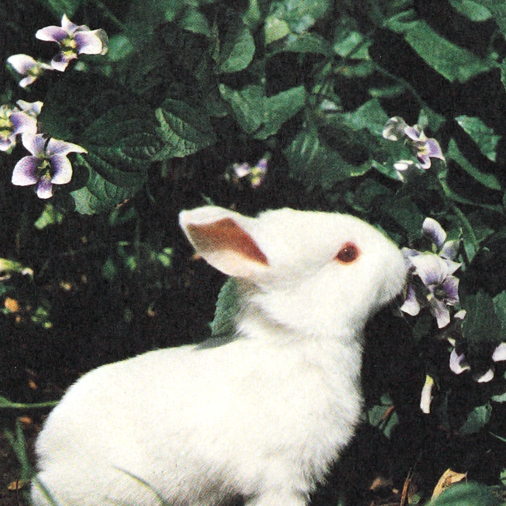
Offset lithograph image detail.
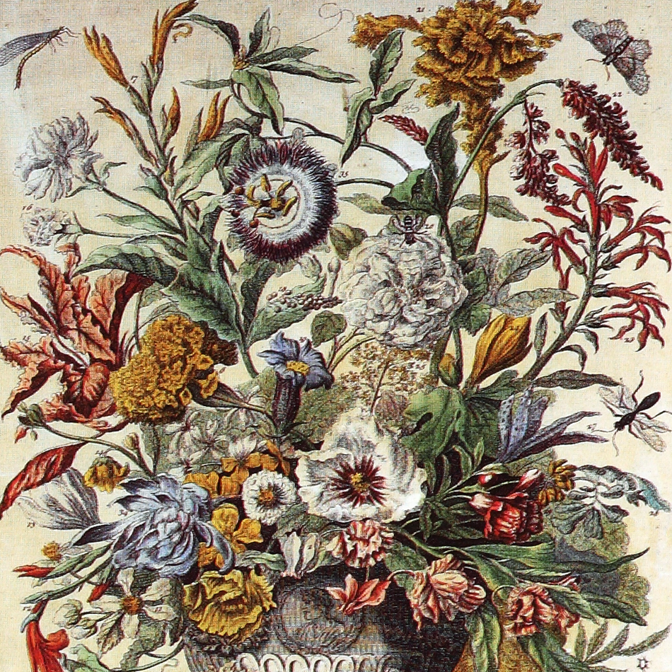
Offset lithograph image detail.
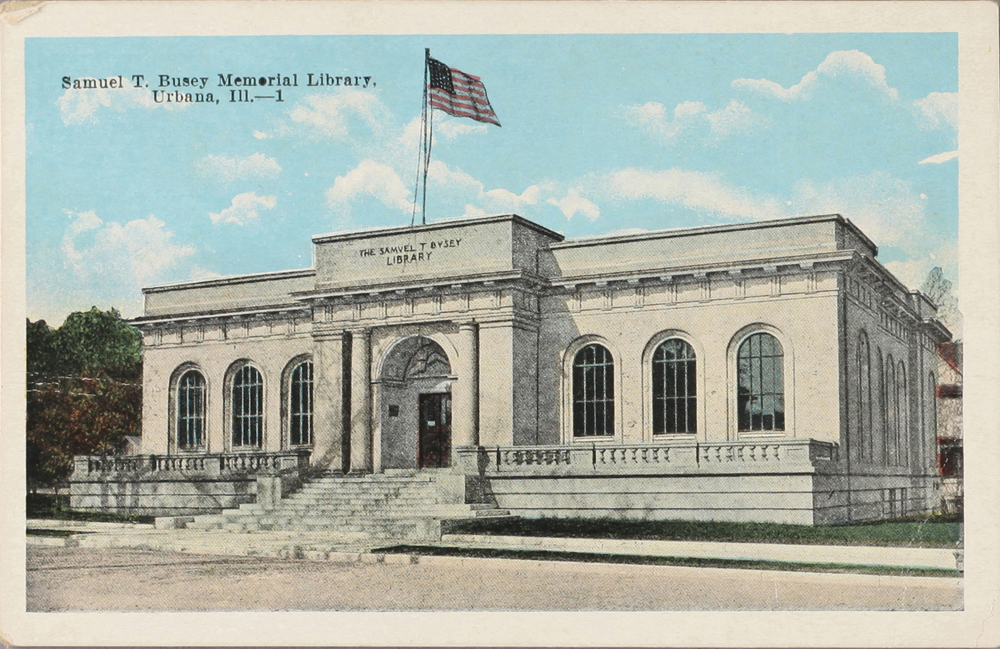
Offset litho. Courtesy of the Champaign County Archives, Urbana Free Library.
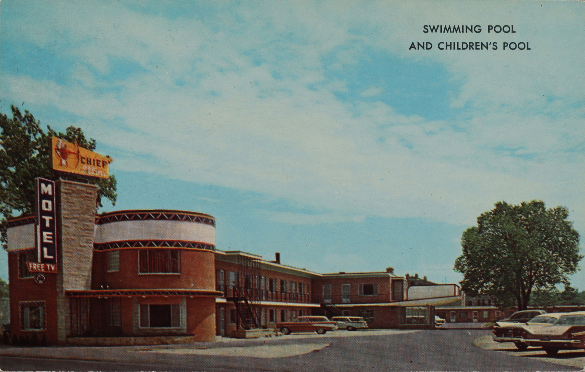
Offset litho postcard. Courtesy of the Champaign County Archives, Urbana Free Library.
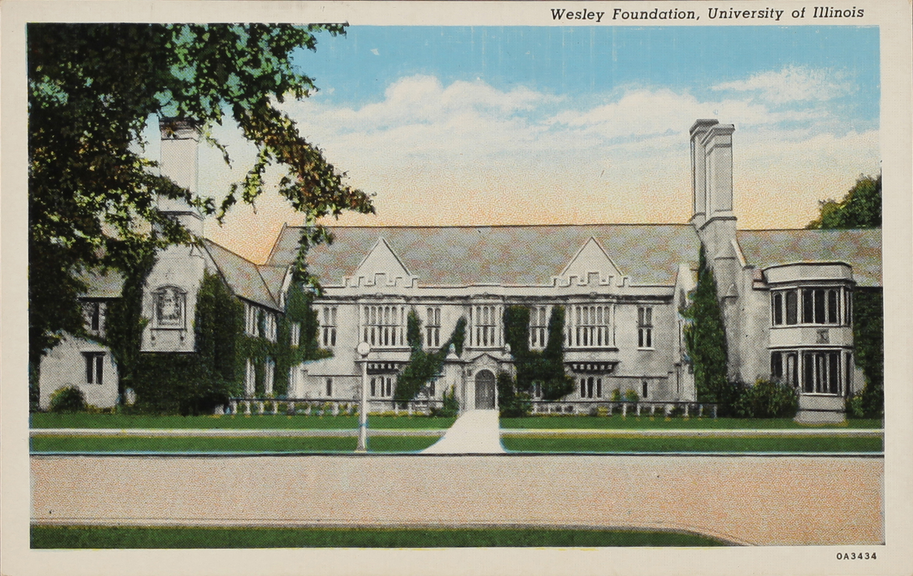
Offset litho postcard. Courtesy of the Champaign County Archives, Urbana Free Library.
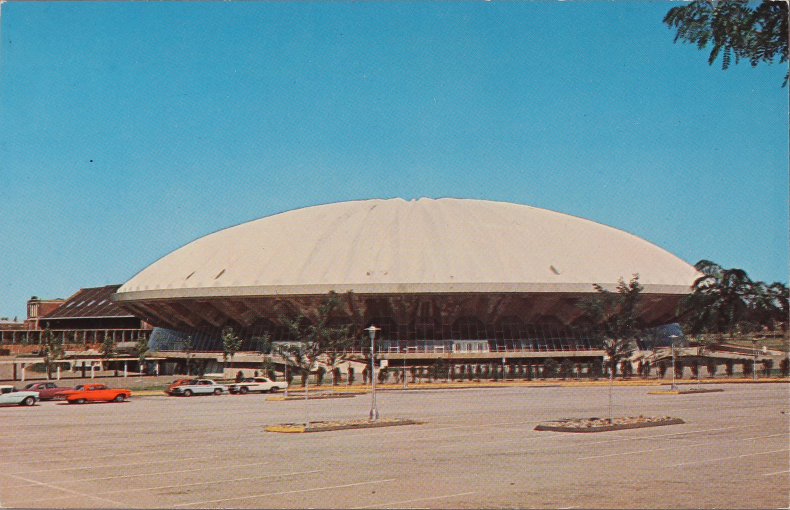
Offset litho postcard. Courtesy of the Champaign County Archives, Urbana Free Library.
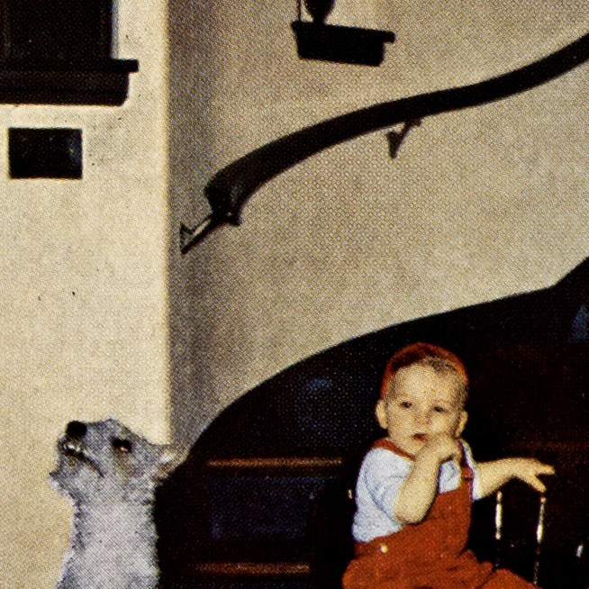
Color misregistration evident at edges or meeting of color fields.
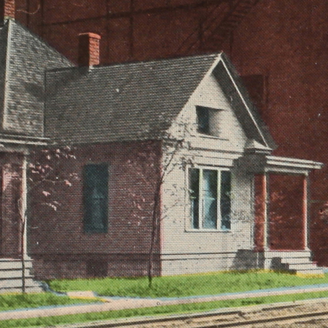
Color misregistration evident at edges or meeting of color fields.
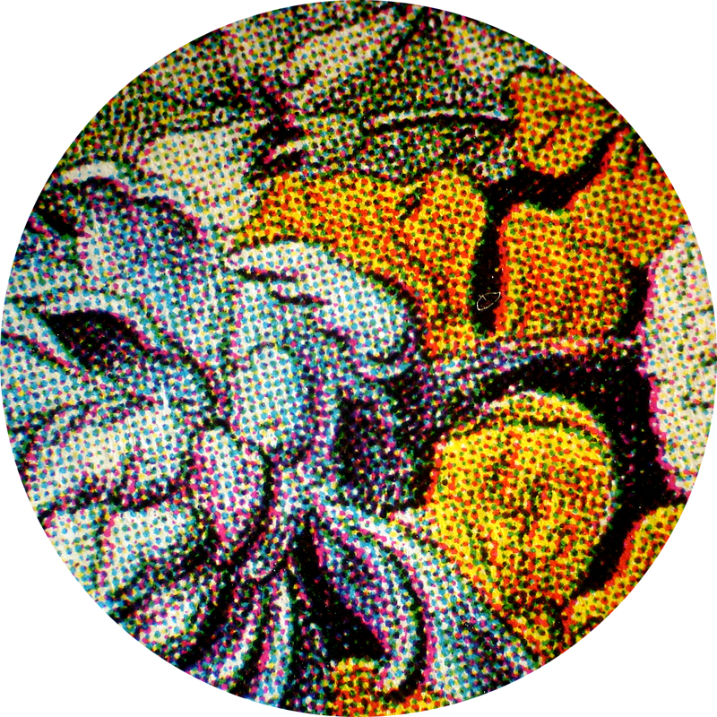
Rosette ink dot pattern under magnification.
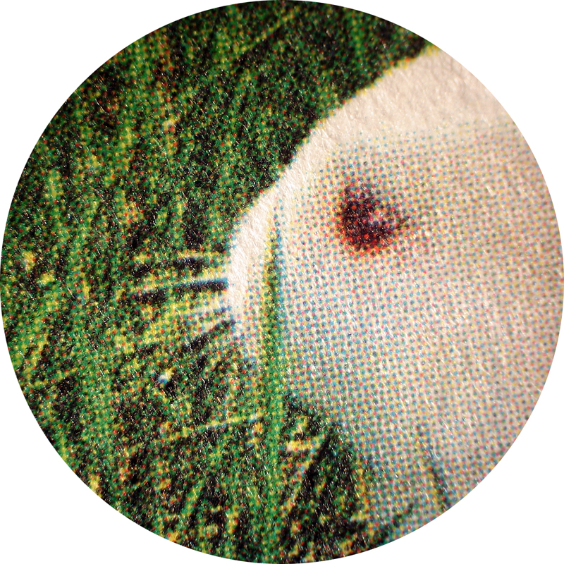
Rosette ink dot pattern under magnification.
An offset lithograph is an ink image on paper support. The offset lithographic printing process involves transferring ink from the metal lithographic plate onto a secondary plate or cylinder (usually made of rubber), and then transferring the ink to the final paper support. Multiple passes with inked color plates are performed for each color print. The offset litho process may be identified by misalignment of these color plates. This misalignment is most apparent in highly-detailed areas or at the edges of an image, where one or more color plates did not match up exactly, resulting in fuzzy image quality.
Under low magnification, ink will appear to have penetrated the paper, giving images their typical soft-edged appearance. A regular rosette ink dot pattern can be seen throughout the image or text under low magnification. If a photolithograph is identified, it can be assumed that there were many copies once produced from it.
Composition
Support
Image
Paper
Ink (oil-based or synthetic)
Deterioration
Black inks are usually oil-based and therefore water insoluble, but color inks are often water soluble and should be protected from exposure to moisture. Offset lithos do not fade but are susceptible to mechanical damage done to their support, such as tearing. Deterioration such as yellowing and embrittlement are dependent on the quality of the support paper.
Risk Level
Low. The preservation risk of an offset lithograph largely depends on the type of paper on which it was printed.
Common Size(s)
Varied; Due to its broad application, prints may be found in a multitude of sizes, although postcard, magazine, newspaper, and book dimensions are the most common.
Background
Offset lithography was used beginning in 1880 and continues to be used to the present day. Lithography was invented in 1798, using a stone as the printing surface for the original process. Since 1880, the offset lithograph press process involves the transfer of ink to a secondary rubber plate or cylinder before printing to the support paper. Offset lithography has been the predominant photomechanical process used for commercial printing since the 1950s. Offset copying machines were no longer used in offices by the 1970s, but the process is still an economical and popular means of producing large volumes of printed matter like newspapers and magazines.
Acid-free enclosures and/or folders strongly advised. This enclosure may be a paper (conservation-quality, acid-free) or plastic (uncoated polyester, polyethylene, polypropylene, cellulose triacetate) sleeve, envelope, or wrapper. Position image material away from seams in paper enclosures. Such seams should be on the sides of the enclosure, not down its center. Enclosures should be stored in hanging file folders or archival storage boxes. All storage materials should pass the Photographic Activity Test (PAT) as specified in ISO Standard 18916:2007.
Storage Orientation
Vertically in file folders, placed vertically inside acid-free storage boxes or steel filing cabinets. Wood cabinets should be avoided. Enameled steel, stainless steel, or anodized aluminum are preferred.
Display Recommendations
The duration of an exhibit should be determined in advance, and no item should be placed on display permanently. Most items should not be displayed for longer than 3 to 4 months, assuming other conditions such as light levels, temperature, and relative humidity are within acceptable ranges. Facsimiles or items of low artifactual value may be exhibited for longer periods of time. Between display periods, it should be returned to an appropriate environment where it may "rest" in dark storage.
Light levels should be kept as low as possible. When on display, objects should be protected from exposure to natural light, which contains high levels of UV radiation. Shades, curtains, or filters applied directly to windows will help to minimize this exposure. Display cases should be enclosed and sealed to protect their contents, and their items should be securely framed or matted using preservation-quality materials that have passed the Photographic Activity Test (ISO18916).
ISO. (2007). 18916 Imaging materials: Processed imaging materials–Photographic activity test for enclosure materials. Geneva, Switzerland: International Organization for Standardization.
Reilly, J.M. (1986). Care and identification of nineteenth-century photographic prints. Rochester, NY: Eastman Kodak Company.
Ritzenthaler, M. L. (1983). Archives & manuscripts: Conservation, a manual on physical care and management. Chicago, IL: Society of American Archivists (SAA Basic Manual Series). [ISO 18920]